<!DOCTYPE html>
<html lang="en">
<head><meta name="generator" content="Hexo 3.9.0">
  <meta charset="utf-8">
  
  
    <meta name="keywords" content="javascript,css,html,算法,前端">
  
  
    <meta name="description" content="愿原力与你同在_friday.fj">
  
  <meta name="viewport" content="width=device-width, initial-scale=1, maximum-scale=1">
  <title>
    基础工具 |
    
    航洋</title>
  
    <link rel="shortcut icon" href="/favicon.ico">
  
  <link rel="stylesheet" href="/css/style.css">
  
    <link rel="stylesheet" href="/fancybox/jquery.fancybox.min.css">
  
  <script src="/js/pace.min.js"></script>
</head>
</html>
<body>
<main class="content">
  <section class="outer">
  <article
  id="post-baseTool"
  class="article article-type-post"
  itemscope
  itemprop="blogPost"
  data-scroll-reveal>

  <div class="article-inner">
    
      <header class="article-header">
        
  
    <h1 class="article-title" itemprop="name">
      基础工具
    </h1>
  

      </header>
    

    
      <div class="article-meta">
        <a href="/2018/05/27/baseTool/" class="article-date">
  <time datetime="2018-05-27T00:45:47.000Z" itemprop="datePublished">2018-05-26</time>
</a>
        
      </div>
    

    <div class="article-entry" itemprop="articleBody">
      

      

      
        <blockquote>
<p>工欲善其事，必先利其器。<br>大部分情况下，好的工具是起着辅助的作用。即使缺少了好工具也只是降低了开发效率，比如选择记事本也可以写出优秀的代码。<br>但是，我们都是「懒」且聪明的开发者，我们善于使用优秀的工具，让工具解放劳动力，加大生产力，提高开发效率。<br>这里介绍几个前端基本的且广为使用的相关工具：<br>Git 代码管理、Chrome dev tools、编辑器与 IDE、PS 与 Sketch 切图、Charles 网路代理。</p>
</blockquote>
<a id="more"></a>

<h2 id="代码调试：dev-tools"><a href="#代码调试：dev-tools" class="headerlink" title="代码调试：dev tools"></a>代码调试：dev tools</h2><p>在 N 年前，有款工具叫 Firebug，那时他还很流行。<br>2005 年 Firebug 面世，是 Firefox 中首个可以让 Web 开发者检测「inspect」、编辑「edit」、调试「debug」的工具。<br>在后续的 Firefox Quantum 发布中，Firebug 所有功能已经集成在 Firefox DevTools。</p>
<p>在 2008 年 9 月，Chrome 发布第一版。后来 Chrome dev tools 慢慢占了上风。<br>Firebug 相比 Chrome dev tools 有很多不足，比如：不支持拖拽 DOM、不支持修改修改 user-agent、界面不友好……<br>接下来聊聊 Chrome dev tools，以下简称 devTools「以 Chrome for Mac 67 版本为标准」。</p>
<ul>
<li>初识 devTools</li>
</ul>
<p>打开 devTools 界面「快捷键：cmd + ait + I 或者 cmd + shift + C」，看到基本的操作界面，由功能导航栏、功能面板组成。<br>导航栏，主要展示 devTools 主要功能，以及功能切换。最常用的功能面板有：Elements、Console、Network。<br>功能面则是当前使用功能的操作面板。  </p>
<p>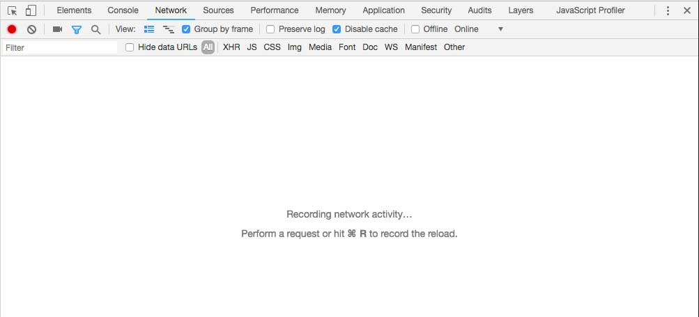</p>
<ul>
<li>查找元素、修改样式、事件追踪</li>
</ul>
<p>首先选择 Element 面板，快捷键「cmd + shift + C」进入选择元素模式，或者点击界面左上角的「元素选择图标」。  </p>
<p>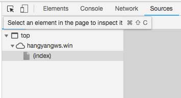</p>
<p>鼠标移动到相应的元素上，相应的元素盒子模型会有相应的颜色高亮，用来表示当前选择到的元素的「轮廓」。   </p>
<p>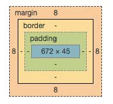</p>
<p>选择好对应的元素后，在操作面板会出现 2 个子面板：元素面板、样式面板。<br>并且在元素面板中高亮当前选择的元素，样式面板中展示对应样式和盒子模型。<br>在元素面板中右键元素，会展开很多操作选项，比如复制、删除、编辑节点等选项。<br>在样式面板可以查看、编辑样式，还能查看当前样式所在的 CSS 文件与对应的行数。</p>
<p>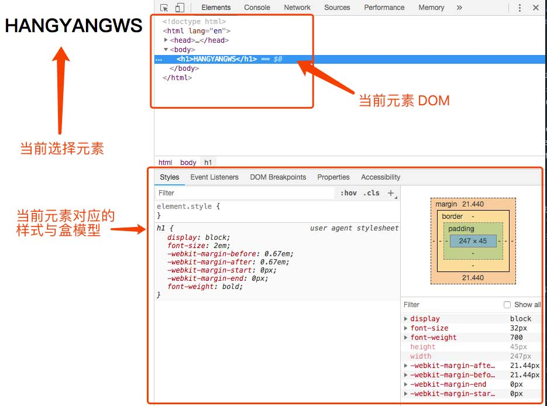<br>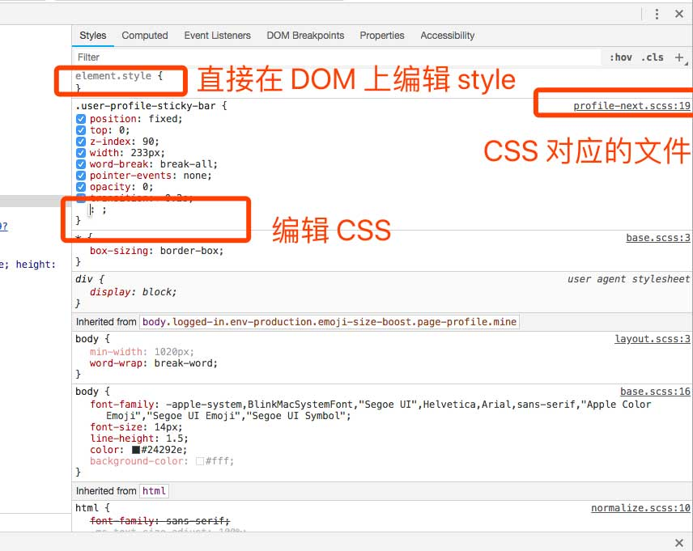<br>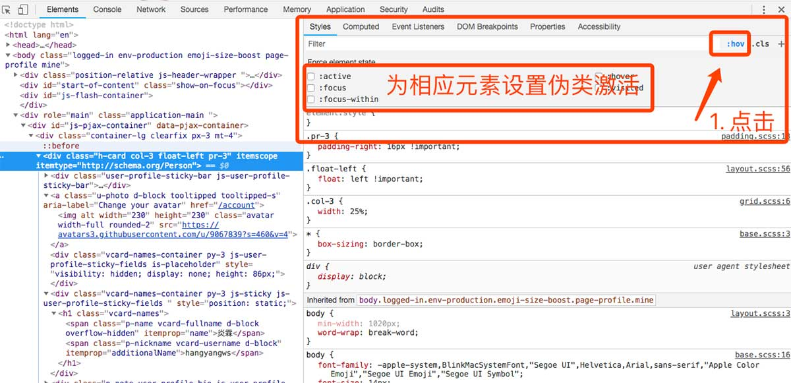</p>
<p>在元素样式面板中有「Event Listeners」的一个选项，可以查看当前元素的事件绑定情况，以及对应的 JS 文件、代码。</p>
<p>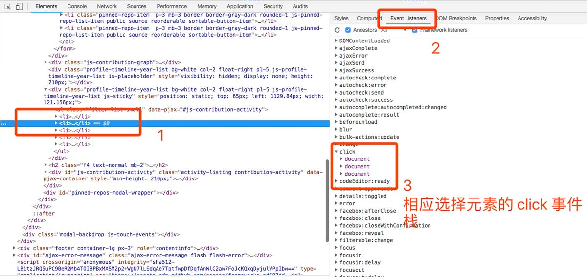</p>
<ul>
<li>模拟页面 UserAgent</li>
</ul>
<p>如果我们需要写 H5 页面，但是又需要模拟手机分辨率的情况，devTools 的 device toolbar 就很有用了。<br>快捷键「cmd + shift + M」或者点击左上角第二个图标，进入 device 调整界面。  </p>
<p>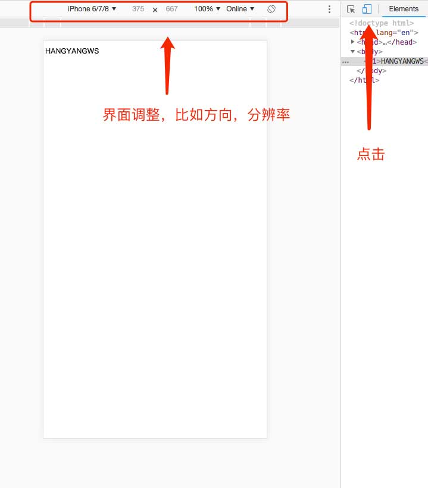</p>
<ul>
<li>查看页面 http 请求</li>
</ul>
<p>选择 NetWork 面板，可以查看页面所有的 http 请求，且支持搜索、分类查询、查看 http 请求详情等功能。  </p>
<p>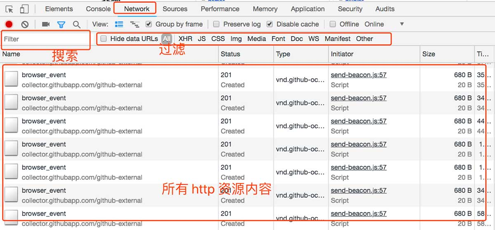<br>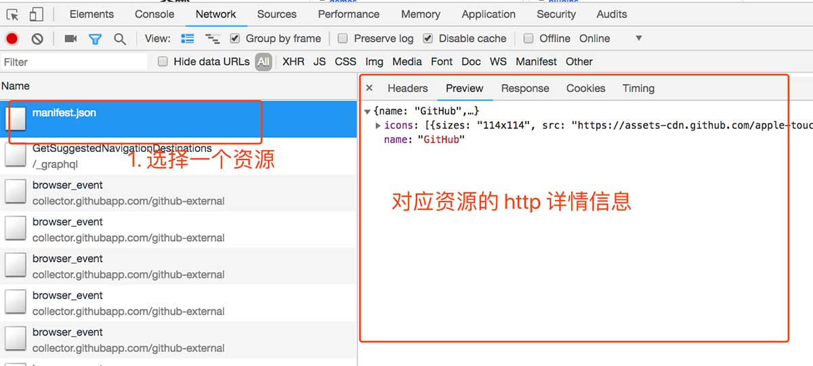</p>
<ul>
<li>JS 断点</li>
</ul>
<p>选择 Sources 面板 → 在左边的资源选择区域选中需要断点的 JS 文件 → 在文件左边的行数提示上点击 → 就完成了一次断点操作。  </p>
<p>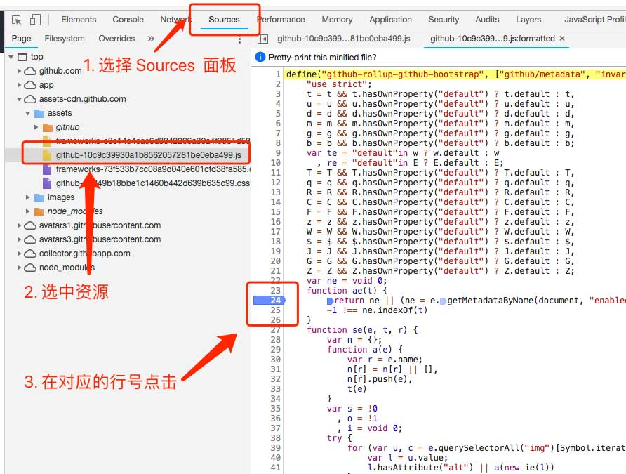</p>
<p>在开发中，在文件中输入「debugger;」，JS 运行时候会自动在此行断点。<br>在 Sources 面板中，除了可以行断点，还能 XHR 断点。</p>
<p>关于断点，推荐一篇文章：<a href="https://segmentfault.com/a/1190000008396389" target="_blank" rel="noopener">Chrome DevTools — JS调试</a><br>文章中介绍了 Elements 面板的 DOM 断点、以及 XHR 断点等详细操作。</p>
<ul>
<li>混淆文件格式化</li>
</ul>
<p>在 Sources 面板中，混淆文件支持一键格式化。</p>
<p>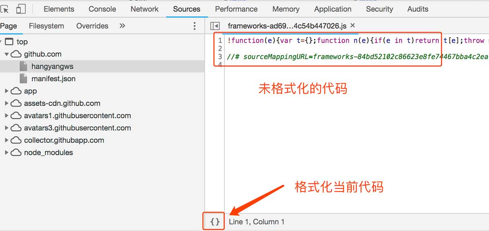</p>
<ul>
<li>查看分析页面性能</li>
</ul>
<p>我们想知道 FPS、CPU、NET 的使用情况；想知道 JS 代码的执行效率；页面 DOM 的渲染情况等都可以从 Performance 面板中查看。</p>
<p>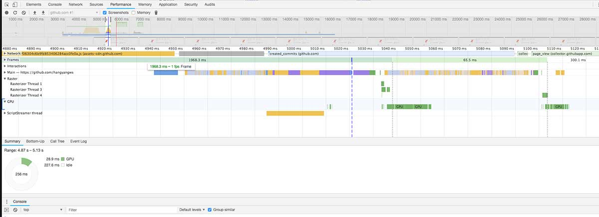</p>
<p>关于性能推荐文章： <a href="https://segmentfault.com/a/1190000009845281" target="_blank" rel="noopener">前端性能优化之 Performance 神器</a></p>
<ul>
<li>总结</li>
</ul>
<p>devTools 就是一片大海，等着你去航行。短篇幅的入门介绍文章不能全部解读，推荐一篇目录全面，描述详细的好文：<a href="http://www.css88.com/doc/chrome-devtools/" target="_blank" rel="noopener">Chrome 开发者工具中文文档</a> </p>
<h2 id="Git-代码管理"><a href="#Git-代码管理" class="headerlink" title="Git 代码管理"></a>Git 代码管理</h2><p>代码管理可是十分的重要，还记得在很久以前使用 SVN，相比后来使用 Git，简直就是解放。<br>与 SVN 相比，Git 具有分布式的特点，使用更灵活，分支轻量化，速度更快，仓库文件尺寸也较小。  </p>
<p>在介绍 Git 前，我们得搞清楚 Git 是什么。<br>Git 是一个开源的分布式版本控制系统，可以有效、高速的处理从很小到大小项目的版本管理。<br>Git 是由 Linus 缔造者「Linus Torvalds」为了帮助管理 Linux 内核开发而研发的一个开放源码的版本控制软件。<br>简单来说，Git 就是一个高级的代码历史管理工具，可以手动给代码打标记、记录版本、回滚版本、合并别人的版本……</p>
<p>这里描述几个平时遇到的业务场景：</p>
<ol>
<li>修改了两个文件，但是只需要上线其中一个文件的功能，这个时候怎么办？</li>
<li>两个人在同时维护一个项目，怎么同步对方的代码？</li>
<li>想看看当前修改代码和上一个版本的区别？</li>
<li>想回到上一个版本的代码？</li>
<li>想看看当前项目的文件状态，修改了哪些文件？</li>
<li>同时开发两个功能，怎样让代码不混在一起？</li>
<li>一不小心删了代码，不知道怎么退回去？</li>
<li>……</li>
</ol>
<p>我相信，如果没有 Git，上面这些问题，真的就是问题了。非常感谢 Linus 大神创造了这么优秀的软件。<br>记得在很久很久以前，我见过复制整个项目文件来做版本管理，现在想想真是令人窒息的操作。<br>可能大家对于版本控制还处于模糊的概念，<br>简单的解释就是，版本控制是一种记录一个或若干文件内容变化，以便将来查阅特定版本修订情况的系统。<br>版本控制不区分文件类型，除了 JS、CSS 文件以外图片等任何类型的文件都可以进行版本控制。</p>
<p>Git 的资源有三种状态：已修改「modified」、已暂存「staged」、已提交「committed」。<br>已修改表示修改了文件，但还没保存到数据库中；<br>已暂存表示对一个已修改文件的当前版本做了标记，使之包含在下次提交的快照中；<br>已提交表示数据已经安全的保存在本地数据库中。  </p>
<p>可以通过「git status」命令查看项目状态。<br>我们可以把本地的 Git 项目分成三个区域概念：工作文件区域、已暂存区域、Git 仓库。<br>结合远端仓库，我们平时的操作流程图大致如下。</p>
<p>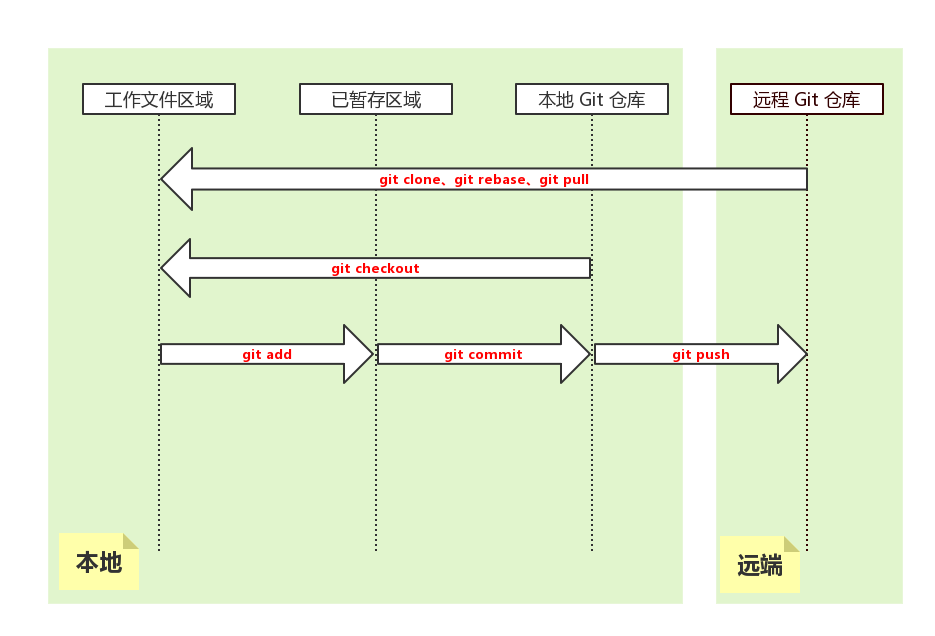</p>
<p>Git 是以命令行为基础的软件，但是市面上有这种各样的 GUI 工具，包括狠多 IDE 默认支持 Git 图形界面。<br>建议初次使用者以命令行上手，会让你更快更深的理解 Git，因为很多 GUI 为了降低操作难度，只实现了 Git 部分常用命令。<br>我们可以选择使用 GUI，但是不能不会命令行。</p>
<p>安装 Git 后应该配置一下用户名和邮箱：<br><code>git config user.name &#39;Name&#39;</code> 修改当前项目用户信息。<br><code>git config user.email &#39;Name@xx.com&#39;</code> 修改当前项目的邮箱信息。  </p>
<p>还有 Git 默认对大小写文件不敏感，需要配置一下：<br><code>git config core.ignorecase false</code> 让 git 对文件大小写敏感。</p>
<p>在安装、配置好 Git 后，可以选择以 Github 项目作为 Git 实验田。<br>首先第一个使用的命令就是「git clone」。<br><code>git clone &lt;url&gt; [FolderName]</code>：检出代码到本地；FolderName 为自定义文件夹名，如果不写则默认以项目名新建文件夹。  </p>
<p>克隆项目到本地后，默认在 master 分支。<br>比如现在需要开发「登录功能」，首先 checkout 一个新的分支：login。<br><code>git checkout login</code> 适用于切换到已经存在的分支，比如切换到 master 分支；<br><code>git checkout -b login</code> 先创建分支，再切换到该分支，适用于开发新功能的时候使用。  </p>
<p>在新的 login 分支上，我们开始开发，新建、修改文件等一些列操作。<br>在开发过程中通过 <code>git status</code> 查看文件的状态。<br>功能开发好了后通过 <code>git add</code> 把相关文件添加到暂存区，然后 <code>git commit -m &#39;登录功能&#39;</code> 添加缓冲区文件到「已提交区」记录文件快照。<br>建议每次 git commit 操作的时候都带上简要的消息。</p>
<p>可能还有其他同事一起开发，我们需要同步他们的代码，在代码合并的时候也许会遇到代码冲突。<br>代码冲突是指多人同时修改同一个文件同一个地方，Git 会不知道使用哪个版本，这个会交给开发者自己解决。<br>首先获取新的代码，方式大致有 2 种：git pull、git rebase。<br>这里介绍 git rebase。关于 pull 与 rebase 的区别，这里不深入讨论。<br>同步远端分支的代码一般流程：</p>
<ol>
<li><code>git fetch</code> // 获取远端最新的代码</li>
<li><code>git rebase origin/branchName</code> // 合并 branchName 分支的代码</li>
</ol>
<p>如果有代码冲突：</p>
<ol>
<li><code>解决冲突</code> // 把冲突的代码改好</li>
<li><code>git add .</code> // 添加相应的修改文件</li>
<li><code>git rebase --continue</code> // 代码合并继续，冲突解决完成</li>
</ol>
<p>在合并同事的代码后，我们通过 <code>git push origin login:login -f</code> 命令把本地 login 分支推送到远端 login 分支。<br>「-f」代表强制推送，一般不推荐使用，当通过 rebase 解决冲突后，一定带上「-f」才能推送成功。</p>
<p>在开发过程中，我们可以通过 <code>git diff</code> 查看已修改的详细内容。<br>注意：在 diff 界面，通过快捷键「q」退出。</p>
<p>如果发现 git commit 的提交信息不正确，还可以通过 <code>git commit --amend</code> 命令修改。<br>通过 <code>git log</code> 命令显示你是提交记录。</p>
<p>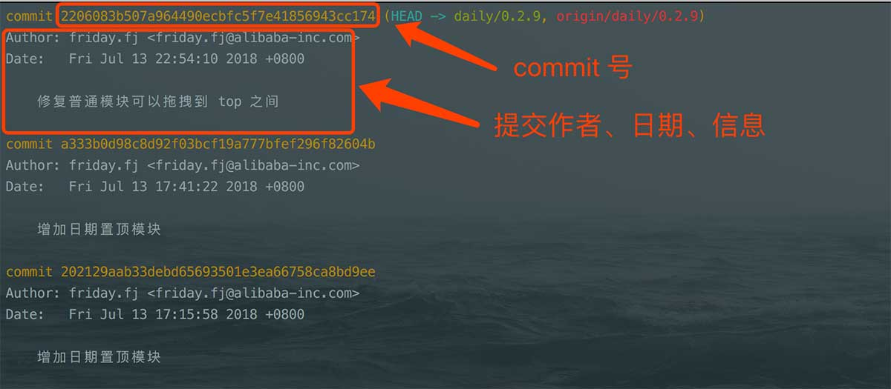</p>
<p>如果想回到某次提交的代码，可以通过 <code>git reset</code> 命令。<br>例如：</p>
<ol>
<li><code>git reset --hard HEAD~3</code> 表示回退到 3 次 commit 前的代码。</li>
<li><code>git reset --soft 495f7482730bcc110308faa1258432ef5cef8cda</code>表示固定回到某一次提交，后面的 hash 值可以通过「git log」查看。</li>
</ol>
<p>当我们的分支上线后，可能就不会再使用这个分支，可以通过 <code>git push origin :branchName</code> 删除远端分支。<br>通过 <code>git branch -D branchName</code> 删除本地分支。</p>
<p>Git 十分强大，使用场景不仅仅局限于上面提到的，我们在平时开发合作中会遇到各种各样的需求场景。<br>比如合并分支，强制以线上代码合并等等。<br>Git 的很多命令以及参数需要我们自己去探索，多看文档，多实践。</p>
<p>最后推荐一片完善的详细的 Git 教程：<a href="https://git-scm.com/book/zh/v2" target="_blank" rel="noopener">Git Book</a></p>
<h2 id="其他"><a href="#其他" class="headerlink" title="其他"></a>其他</h2><h3 id="编辑器与-IDE"><a href="#编辑器与-IDE" class="headerlink" title="编辑器与 IDE"></a>编辑器与 IDE</h3><p>作为一个 coder，编辑器是基础工具，是必须得熟练掌握的，因为它将陪伴你很多年。<br>编辑器相比 IDE 的优点是：界面简洁，安装包小，启动快速，轻便灵活，可扩展；<br>缺点也随之而来，由于快速，体积小，往往不支持编程语言的识别，不包含调试、编辑等。<br>比较常见编辑器有 Sublime Text、Emacs、Vim、Atom…  </p>
<p>比如 Sublime 界面简单，单纯是个文本编辑器，从某种层面上看和 windows 的记事本无差异。<br>但是 Sublime 支持各种快捷键、多行编辑、正则多文件搜索、goto anything、Snippets 代码片段、图片预览、自定义配置、丰富的插件……<br>在熟练使用过后，会成为开发利器，爱不释手。<br>Atom 和 Sublime 大部分类似，Atom 界面是本地 HTMl 渲染，性能相比 Sublime 差一些。  </p>
<p>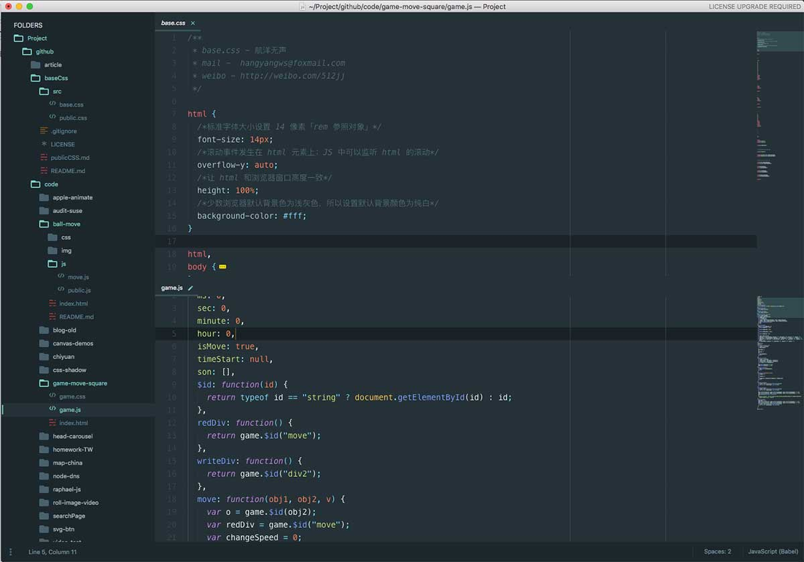</p>
<p>有不少 coder 极客偏爱 Emacs、Vim，前段时间看到一个段子：<br>Q：如何得到一个标准的随机字符串？A：让新手退出 Vim。<br>从这个段子可以看出，Vim 好像很难上手的样子，不过 Vim 也有自己迷人的地方：<br>历史悠久、高逼格「可忽略」、跨平台、Mac，Unix，Linux 自带……<br>Emacs 相比 Vim 用户量会少很多，但是却强大狠多，如果有兴趣可以尝试。<br>编辑器最重要的是自己喜欢，习惯，适应，熟悉，切记盲从跟风。  </p>
<p>和编辑往往一起被谈及的是 IDE「Integrated Development Environment - 集成开发环境」。<br>IED 从名字就能看出来，不仅仅只有编辑功能，而是一个集成环境。<br>IDE 就像一个成熟的工厂，不仅仅能编辑代码，甚至可以代码运行、断点，有些 IDE 还集合了相应开发语言的 SDK。<br>在 IDE 中，开发者可以根据自己的开发语言、喜好安装相应的插件，帮助自己更好的运行、调试。<br>市面上常见的 IDE 有：JBuilder、Eclipse「市场份额持续下滑」、Intellij IDEA、Visual Studio Code……<br>在前端，见过做多的是 VSCode、其次是 IDEA。<br>而且碰巧，我见使用 IDEA 的前端工程师们大多安装了 Vim 插件。不过 IDEA 的 Web 版目前是收费的。<br>这里谈一谈 VSCode，更友好的 UI 支持，自带 Git 管理、调试工具、扩展程序管理……  </p>
<p>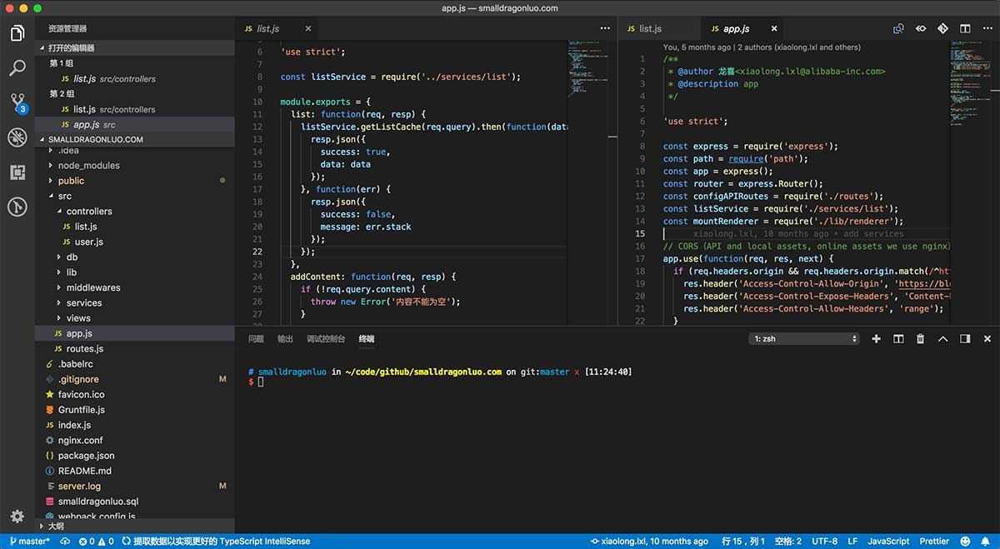</p>
<p>如果编辑器不能满足自己的日常需求，可以考虑进军 IDE，你会发现另一片新天地。</p>
<h3 id="切图"><a href="#切图" class="headerlink" title="切图"></a>切图</h3><p>切图可不是像名字一样，看起来那么简单。<br>首先我们得知道我们需要什么样的图，尺寸多大，是否有透明背景，需要什么格式，什么格式最合适……  </p>
<p>一般情况下，小图标、有透明背景的图片统一切图为 png 格式。<br>如果图片颜色要求不高，且颜色单一的图可以考虑切图为 png8，因为 png8 的文件大小会小很多。  </p>
<p>png8：<br>最多只能展示 256 种颜色，所以 png8 格式更适合颜色比较单一的图像。<br>例如纯色、logo、图标等，因为颜色数量少，所以图片的体积也会更小。</p>
<p>png24：<br>可展示的颜色就远远多于 png8，最多可展示的颜色数量多达 1600 万；<br>所以 png24 所展示的图片颜色会更丰富，图片的清晰度也会更好，图片质量更高，当然图片的大小也会相应增加，<br>所以 png24 的图片比较适合像摄影作品之类颜色比较丰富的图片；</p>
<p>如果图片没有透明像素，且尺寸较大，考虑切图为 jpg 格式。<br>jpg 相对于 png 没有透明通道，文件体积会小很多。</p>
<p>在 PS 里，快捷键 <code>cmd + shift + alt + S</code> 是图片保存为 web 版格式，且有各种存储选项可供挑选。</p>
<p>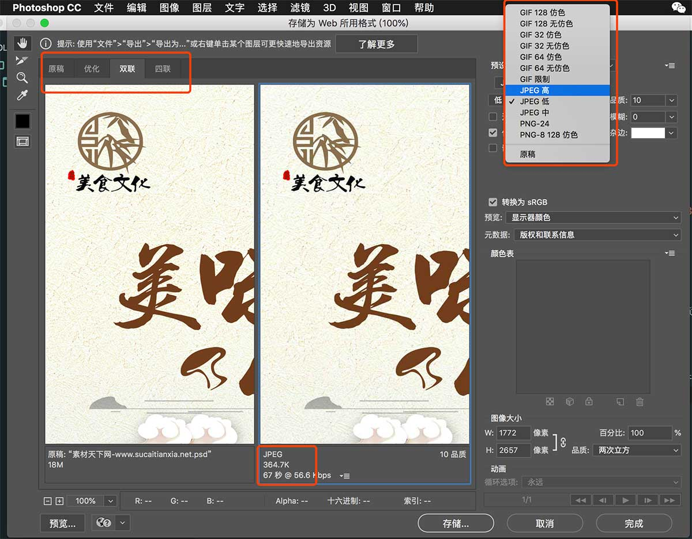</p>
<p>首先我们讲讲 PS 切图，如下图需要把一盘小龙虾和盘子阴影切下来，用于 Web 图片。</p>
<p>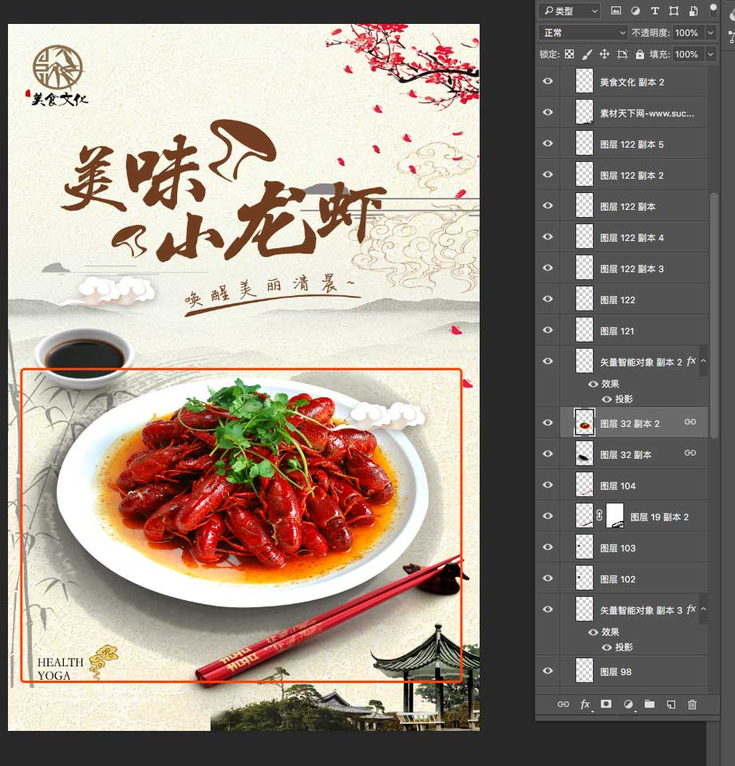</p>
<p>但是我们发现盘子和阴影是 2 个图层。</p>
<p>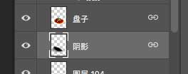</p>
<p>这个时候我们可以按住 cmd 键，鼠标依次点击 2 个图层，选中后 <code>cmd + G</code> 快捷键把 2 个图层合并为一个组。<br>然后再右键新的分组，选择「快速导出 png」就可以得到我们需要的 2 个合并后的图层了，并且是透明背景的 png。</p>
<p>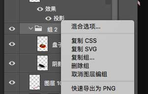</p>
<p>另外 PS 的切图工具也是切图不错的选择。</p>
<p>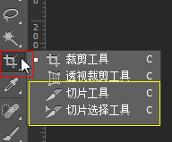</p>
<p>用「切片工具」选择好要切的区域后，在导出 Web 格式的时候，会自动选择切图模式：</p>
<p>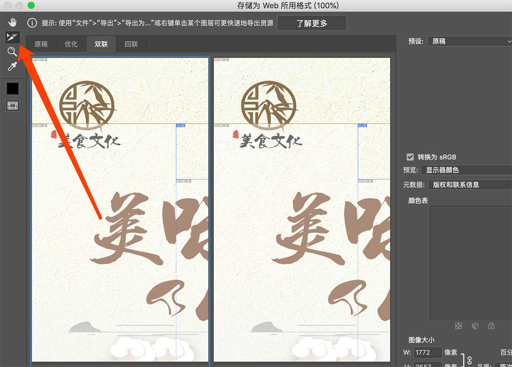</p>
<p>现在 UI 设计师都不怎么用 PS 设计，好像喜欢 PS 都是喜欢玩摄影的大佬。<br>UI 设计师纷纷使用 sketch 设计视觉稿，所以我们还得学会 sketch 切图才行呀。</p>
<p>sketch 和 PS 类似，都有层叠的概念。在选中某个层，或者某个组后，在软件右下角有个「Make Exportable」按钮。<br>sketch 支持转换切图倍数，切图格式。</p>
<p><br>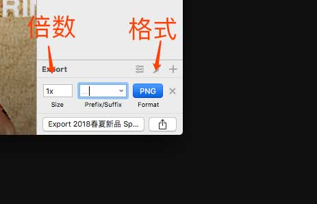</p>
<h3 id="Charles-网络代理、抓包"><a href="#Charles-网络代理、抓包" class="headerlink" title="Charles 网络代理、抓包"></a>Charles 网络代理、抓包</h3><p>Charles 是作为「代理服务器」来完成封包截取的，在使用 Charles 的第一步是将其设置成系统的代理服务器。</p>
<p>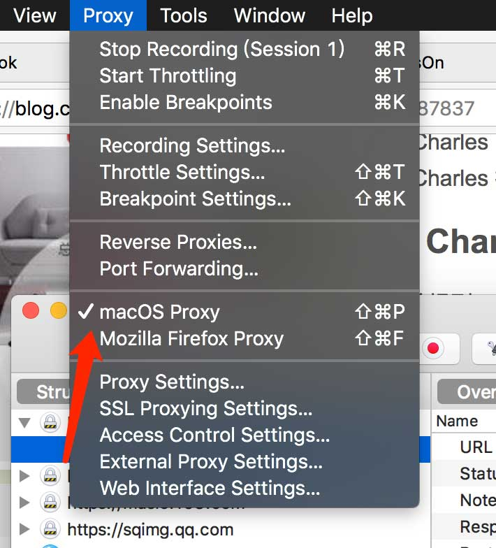</p>
<p>Charles 是作为代理服务器来运作的，默认情况下是不能拦截浏览器的 http 请求的，需要在浏览器上设置代理到 Charles 上。<br>这里推荐一款 Chrome 插件：SwitchyOmega「一个代理设置工具」。</p>
<p>比如我们现在有个需求：在线上环境调试 JS 代码。通过 Charles 代理把线上环境的 JS 文件请求替换为本地的 JS 资源。<br>首先查看 Charles http 端口：</p>
<p>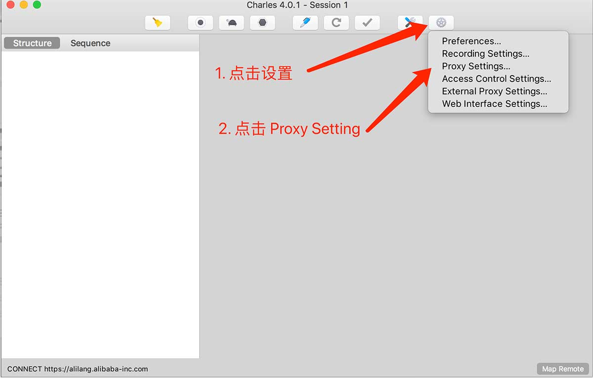<br>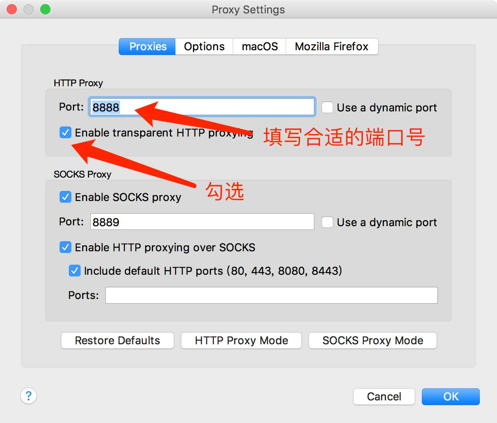</p>
<p>然后在 Chrome 中使用 SwitchyOmega 设置代理到 Charles 上。</p>
<p>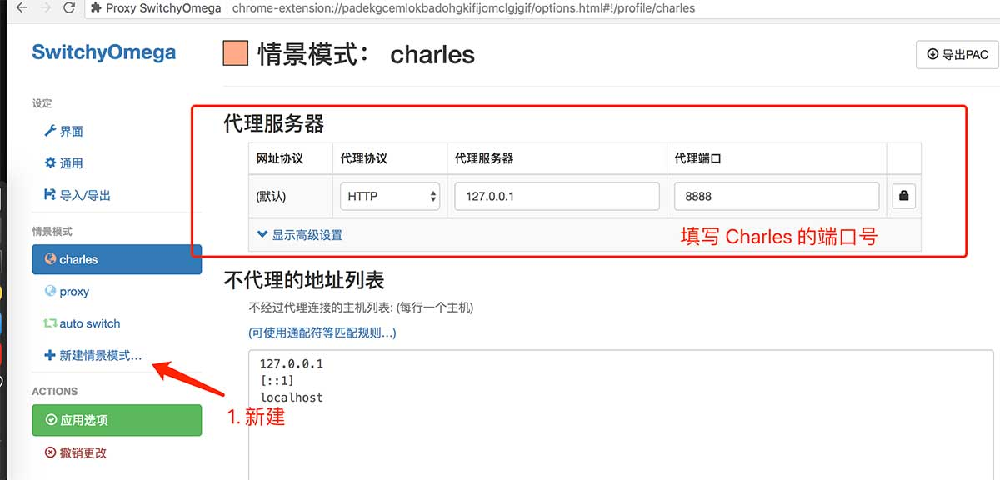</p>
<p>再设置 Map Remote，指定代理的请求：<br>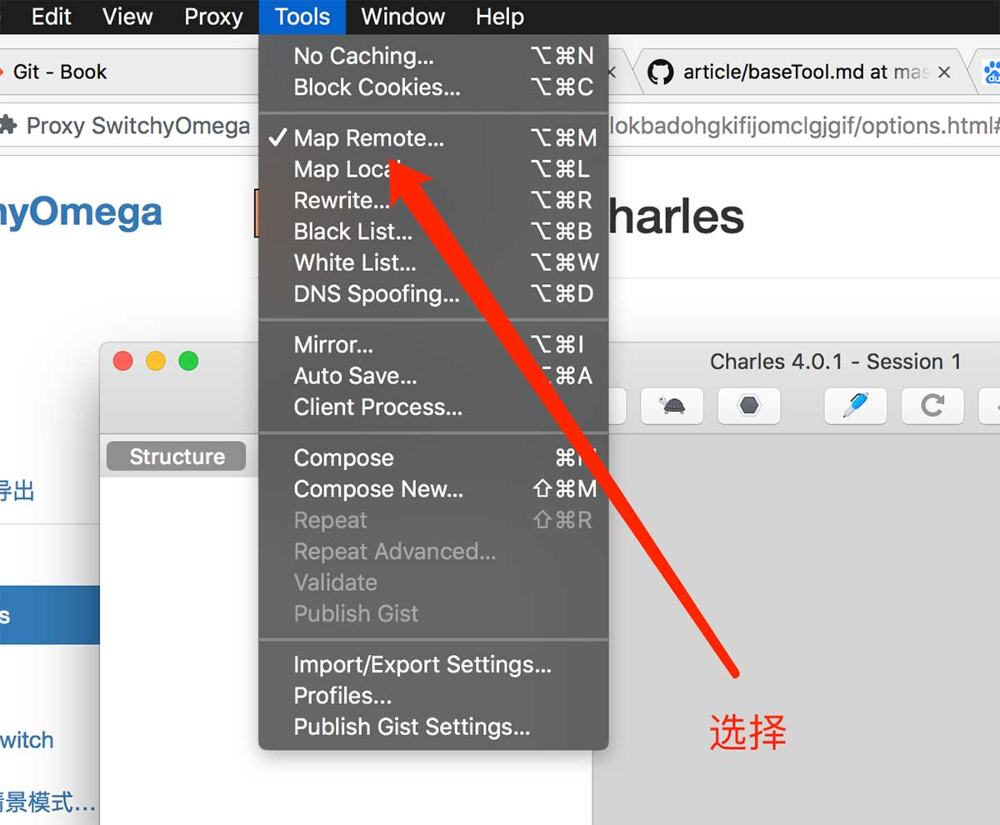<br>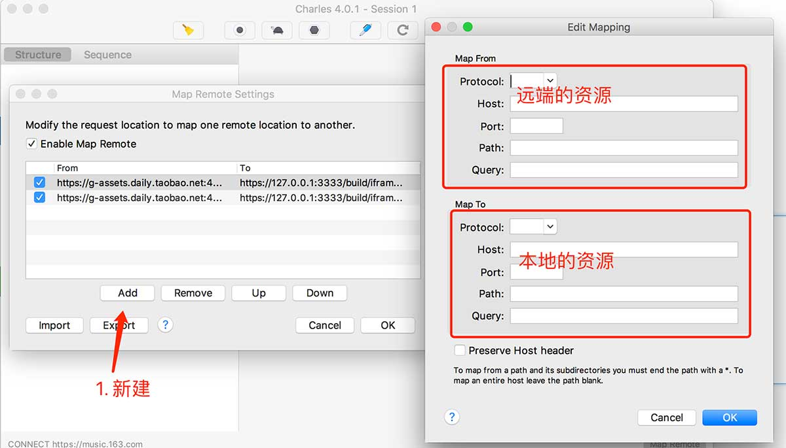</p>
<p>这个时候就完成了资源代理设置，刷新浏览器，在 devTools 版本中看到的相应的 http 请求就是经过 Charles 代理后的。</p>
<p>Charles 抓包原理一样。在设置好代理后，打开 Recoring 功能：<br>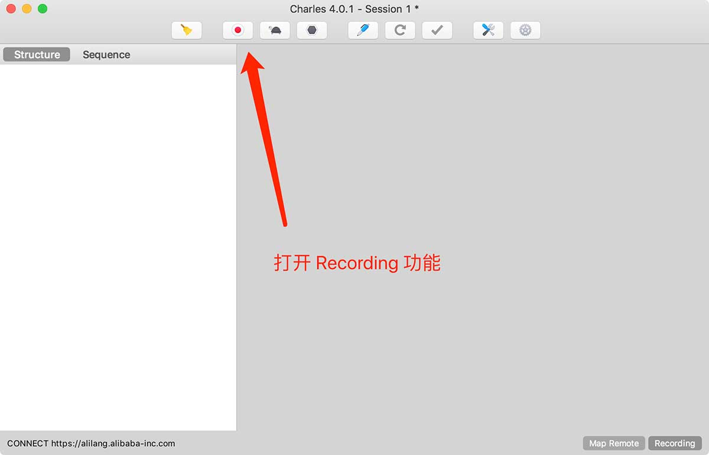</p>
<p>抓包一般常用与手机端，因为 PC 端 devTools 可以做到相似的功能。<br>在手机端一样需要设置代理，且保持手机 Wi-Fi 和电脑处于相同的局域网。</p>

      
    </div>
    <footer class="article-footer">
      <a data-url="http://hangyangws.win/2018/05/27/baseTool/" data-id="cjxy4doe7001fx0n0zjpdhvwt"
         class="article-share-link">Share</a>
      
  <ul class="article-tag-list"><li class="article-tag-list-item"><a class="article-tag-list-link" href="/tags/工具/">工具</a></li></ul>

    </footer>

  </div>

  
    
  <nav class="article-nav">
    
      <a href="/2018/07/27/hooks-replace-redux/" class="article-nav-link">
        <strong class="article-nav-caption">Newer posts</strong>
        <div class="article-nav-title">
          
            使用 React Hooks 代替 Redux
          
        </div>
      </a>
    
    
      <a href="/2018/02/21/for-in-of/" class="article-nav-link">
        <strong class="article-nav-caption">Olde posts</strong>
        <div class="article-nav-title">for-in 与 for-of</div>
      </a>
    
  </nav>


  

  
    
  <div class="gitalk" id="gitalk-container"></div>
  <link rel="stylesheet" href="https://unpkg.com/gitalk/dist/gitalk.css">
  <script src="https://unpkg.com/gitalk/dist/gitalk.min.js"></script>
  <script src="https://cdn.bootcss.com/blueimp-md5/2.10.0/js/md5.min.js"></script>
  <script type="text/javascript">
    var gitalk = new Gitalk({
      clientID: 'db1582ddec91680f2318',
      clientSecret: '538f08a4f7b4eadeff4db57081c303baff6bc3d1',
      repo: 'hangyangws.github.com',
      owner: 'hangyangws',
      admin: ['hangyangws'],
      // id: location.pathname,      // Ensure uniqueness and length less than 50
      id: md5(location.pathname),
      distractionFreeMode: false,  // Facebook-like distraction free mode
      pagerDirection: 'last'
    })

  gitalk.render('gitalk-container')
  </script>

  

</article>


</section>
  <footer class="footer">
  
  <div class="outer">
    <div class="float-right">
      <ul class="list-inline">
  
    <li><i class="fe fe-smile-alt"></i> <span id="busuanzi_value_site_uv"></span></li>
  
</ul>
    </div>
    <ul class="list-inline">
      <li>&copy; 2019 航洋</li>
    </ul>
  </div>
</footer>

</main>
<aside class="sidebar">
  <button class="navbar-toggle"></button>

<nav class="navbar">
  
    <div class="logo">
      <a href="/"></a>
    </div>
  
  <ul class="nav nav-main">
    
      <li class="nav-item">
        <a class="nav-item-link" href="/">Home</a>
      </li>
    
      <li class="nav-item">
        <a class="nav-item-link" href="/archives">Archives</a>
      </li>
    
      <li class="nav-item">
        <a class="nav-item-link" href="/gallery">Gallery</a>
      </li>
    
      <li class="nav-item">
        <a class="nav-item-link" href="/about">About</a>
      </li>
    
      <li class="nav-item">
        <a class="nav-item-link" href="/tags">Tags</a>
      </li>
    
    <li class="nav-item">
      <a class="nav-item-link nav-item-search" title="搜索">
        <i class="fe fe-search"></i>
        Search
      </a>
    </li>
  </ul>
</nav>

<nav class="navbar navbar-bottom">
  <ul class="nav">
      <li class="nav-item">
          <div class="totop" id="totop">
    <i class="fe fe-rocket"></i>
</div>
      </li>
    <li class="nav-item">
      
    </li>
  </ul>
</nav>

<div class="search-form-wrap">
  <div class="local-search local-search-plugin">
  <input type="search" id="local-search-input" class="local-search-input" placeholder="Search...">
  <div id="local-search-result" class="local-search-result"></div>
</div>
</div>
</aside>
<script src="/js/jquery-2.0.3.min.js"></script>
<script src="/js/lazyload.min.js"></script>
<script src="/js/busuanzi-2.3.pure.min.js"></script>


  <script src="/fancybox/jquery.fancybox.min.js"></script>


  <script src="/js/search.js"></script>


<script src="/js/ocean.js"></script>

</body>
</html>